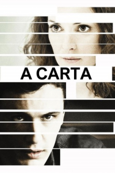

A Carta (2012)


Obsession can blur the lines of reality.

Avaliação (TMDb):


3.9/10 (16 votos)
Avaliação (Usuário):
Outro Título:Letter, The
País:United States, 92 minutos
Idiomas falados:Inglês, Português
Gênero(s):Drama
Diretor(s):Jay Anania
Codec:MPEG-2 (DVD)
Número: 128
Sinopse:
Este intenso filme, centra-se em Martine Jamison (Winona Ryder), uma diretora teatral que começa a ficar mentalmente perturbada durante os ensaios da sua nova peça de teatro, que será protagonizada pelo seu namorado Raymond (Josh Hamilton), e pelo belo e novato Tyrone (James Franco).
Elenco:
James Franco, Winona Ryder, Dagmara Domińczyk, Josh Hamilton, Julie Ann Emery, Marin Ireland, Katherine Waterston, Eisa Davis, Nina Ljeti, Tanner Beard
Tipo de mídia: DVD5,
Legendas: Português
Alugado: Não
Tela: Unknown